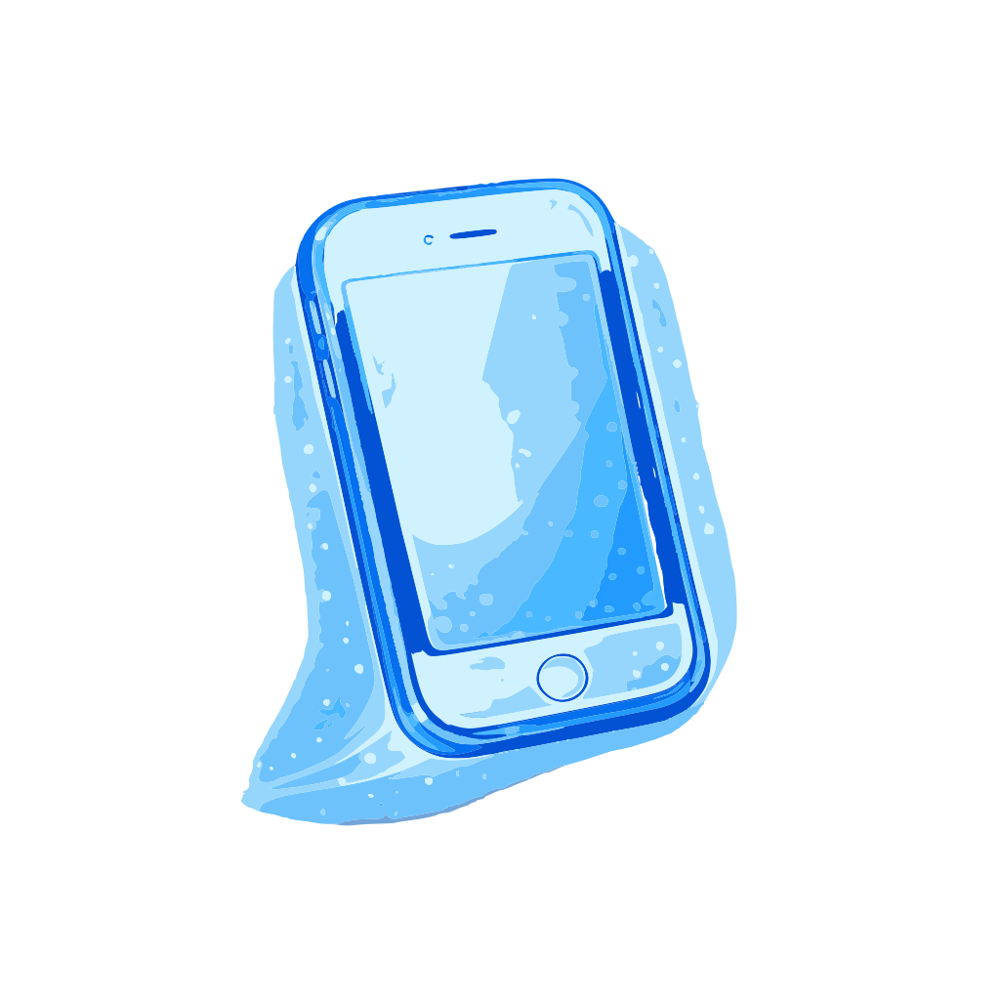
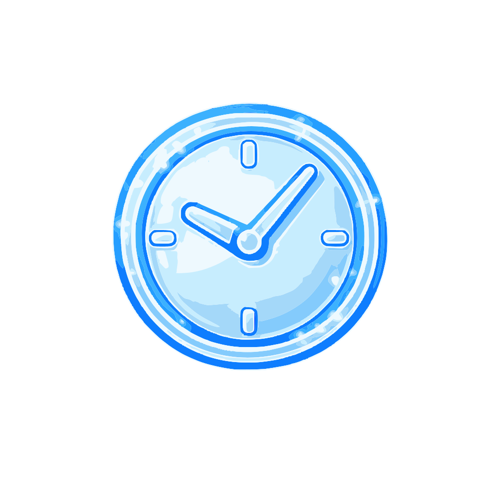

Буду рада ответить на ваши вопросыи подобрать удобное время для приёма
VK
@podolog_anna_kudurova
Telegram
@podolog_anna_kudurova_ul
MAX

Телефон
+7 (995) 335-78-08

Часы работы
Ежедневно 10:00 — 20:00
Адрес
Ульяновская область, г. Ульяновск,ул. Азовская, 64